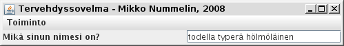
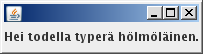

class), joista yhdessä on main-funktio.
import java.awt.*;
import java.awt.event.*;
import javax.swing.*;
public class Hoi extends JFrame {
private JMenuItem sulkemisVaihtoehto=new JMenuItem("Sulje");
private JMenu lista=new JMenu("Toiminto");
private JMenuBar palkki=new JMenuBar();
private JPanel tausta=new JPanel(new BorderLayout());
private JLabel kysymys=new JLabel("Mikä sinun nimesi on? ");
private JTextField nimi=new JTextField(20);
private Tervehdys tervehdys=null;
public Hoi() {
this.setTitle("Tervehdyssovelma - Mikko Nummelin, 2008");
this.addWindowListener(new WindowAdapter() {
public void windowClosing(WindowEvent e) {
System.exit(0);
}
});
sulkemisVaihtoehto.addActionListener(new ActionListener() {
public void actionPerformed(ActionEvent e) {
System.exit(0);
}
});
lista.add(sulkemisVaihtoehto);
palkki.add(lista);
this.setJMenuBar(palkki);
this.add(tausta);
tausta.add(kysymys,BorderLayout.WEST);
nimi.addActionListener(new ActionListener() {
public void actionPerformed(ActionEvent e) {
tervehdys=Tervehdys.getInstance();
tervehdys.tervehdysTekstiKentta.
setText("Hei "+nimi.getText()+".");
tervehdys.pack();
tervehdys.setVisible(true);
}
});
tausta.add(nimi,BorderLayout.EAST);
this.pack();
this.setVisible(true);
}
public static void main(String[] args) {
new Hoi();
}
}
class Tervehdys extends JFrame {
public static Tervehdys ainoaInstanssi=null;
public JLabel tervehdysTekstiKentta;
private Tervehdys() {
tervehdysTekstiKentta=new JLabel();
this.add(tervehdysTekstiKentta);
this.addWindowListener(new WindowAdapter() {
public void windowClosing(WindowEvent e) {
ainoaInstanssi.setVisible(false);
}
});
}
public static Tervehdys getInstance() {
if(Tervehdys.ainoaInstanssi==null) {
ainoaInstanssi=new Tervehdys();
}
return Tervehdys.ainoaInstanssi;
}
}
Oletetaan, että tämä ohjelma on talletettu nimellä Hoi.java. Tällöin
se voidaan kääntää ja ajaa käskyillä
$ javac Hoi.java $ java Hoi
Sen tulostamat ikkunat näyttävät suunnilleen seuraavanlaisilta:
 Itse ohjelma on saatavissa valmiina lähdekoodina tästä.
ant ja arkistopaketin *.jar koostaminenVähääkään isommissa Java-projekteissa tulee helposti tarve koodin yksinkertaiseen kääntämiseen ja sen paketoimiseen helposti ajettavaksi paketiksi joko komentoriviltä tai Java Web Start:illa. Tällöin kannattaa vähintäänkin vakavasti harkita projektihakemiston kunnollista organisointia ja Apache Ant-käännöstyökalun käyttämistä. Suosittu hakemistorakenne on seuraavanlainen:
.
|-- build.xml
|-- build/
|-- dist/
`-- src/
|-- manifest.txt
`-- sovelma/
`-- *.java
Näistä build/ ja dist/-hakemistoja ei luoda valmiiksi
rakenteeseen vaan ne luodaan aina erikseen ant:in alustustehtävässä.
Ant nimittäin toimii siten, että se lukee build.xml-nimisen
XML-tiedoston ja suorittaa sen perusteella käännös ym. toimintoja. Mainittujen
hakemistojen lisäksi saattaa paketissa olla myös lib/-hakemisto
ulkopuolisten toimittamia paketteja, kuten kuvankäsittelijöitä tai
tietokanta-ajureita varten. Esimerkki build.xml,
joka tarvitsee tuekseen seuraavanlaisen
manifest.txt:n, koska muuten ohjelmapaketin
ajamiseen tarkoitettu käsky
$ java -jar dist/projekti<versio>.jarei toimi. Ohjelman käännös ja paketointi suoritetaan seuraavin käskyin:
$ ant clean $ ant distEnsinmainittu käsky puhdistaa hakemistopuun, se ei kaikissa tapauksissa ole välttämätön, mutta ainakin ennen isojen projektien tuotantoonviemistä, erittäin suositeltava.
Tämä on todennäköisesti kirjoitushetkellä 2008 tärkein liikemaailmassa käytetty Java-teknologian kokoelma. J2EE tarkoittaa karkeasti ottaen standardin Java-teknologian (J2SE, johon kuuluvat mm. Java-kääntäjä, standardikirjastot ja virtuaalikone) sekä kehittyneiden verkko- ja tietokantateknologioiden muodostamaa yhteistä tuoteperhettä. Tyypillinen kaupallisen käytön sovellus koostuu sovelluspalvelimesta (esimerkiksi Glassfish, Tomcat tai BEA Weblogic), joka tarjoaa käyttäjälle nähtäväksi verkkoliittymän, tietoa ja tietojenkäsittelyä käsittävistä Java-luokista (esimerkiksi Enterprise Java Beans) ja tietokannasta (esimerkiksi Oracle tai MySQL). Sovelluspalvelimen verkkosivut voivat olla esimerkiksi puhdasta HTML:ää (harvinaista), Javalla tehtyjä palvelinosia (servlets) tai jotakin muuta merkintäkieltä, esim. JSP:tä (Java Servlet Pages). Tarkempia tietoja varten ks. yllämainitun sivun 'Download'-osiota.
Tämä on tietokantakenttien ja Java-luokkien sisältämien muuttujien vastaavuuksien merkintään kehitetty työkalu, joka sisältää myös muitakin tietokantojen käsittelyominaisuuksia. Se on tarkoitettu vähentämään monimutkaisten tietokantakyselyiden tarvetta.
Eräs suosituimmista tietokannoista. Kannattaa lukea sivulta löytyvä manuaali, josta oppii esimerkiksi tärkeää SQL-tietokantakyselykieltä.
Tämä on tärkeä sovelluspalvelin. Sitä käytetään J2EE-teknologialla tehtyjen verkkosovelmien,
esimerkiksi *.war-tyyppisten verkkosivuja ja Java-luokkia käsittävien pakettien
näyttämiseen käyttäjän selaimella. Tässä, kuten muissakin sovelluspalvelimissa, on olennaisena
osana ylläpitäjän konsoli (administration console), jossa voidaan määrittää käyttäjien oikeuksia
ja verkkosivujen näkymisiä tarkemmin.